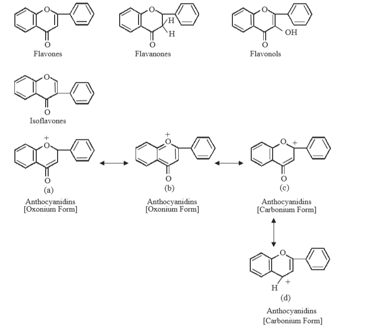
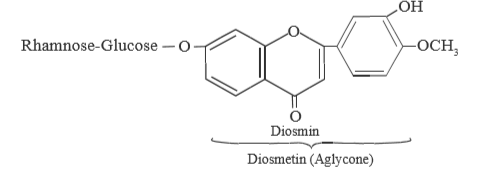
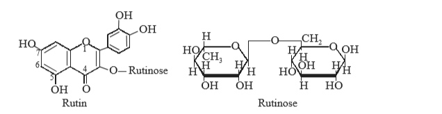
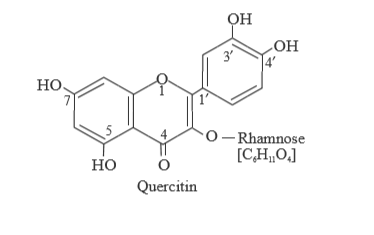
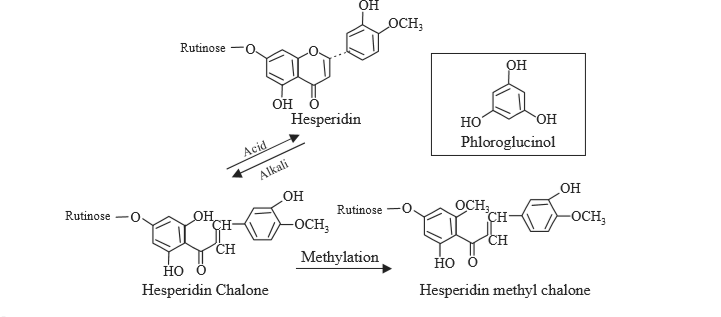

Flavonoids in general, rutosid, diosmin, hesperidin, quvercitrin
FLAVONOIDS:
→ largest class of natuarally occuring plant products
- mostly phenols ( either free state or as their respective glycosides)
→ more than 2000 different chemical compounds have been isolated
→chemical structures
- based upon a C6—C3—C6 carbon skeleton having
- a pyran or chroman ring bearing
- a second benzene (aromatic) ring → strategically positioned at C—2, C—3 or C—4
→ In nature → flavones, flavanones, flavonols, isoflavones, and anthocyanidins
- 6-membered heterocyclic ring (pyrones) is replaced by a 5 membered heterocyclic ring (aurones) or exists in an open-chain isomeric form (chalcones).
- antimicrobial agents,
- signaling molecules,
- stress metabolites.
- 
- antiasthmatic, antispasmodic, diuretic, fungicidal and oestrogenic activities
- (a) Flavone Glycosides,
- (b) Flavonol Glycosides,
- (c) Flavanone Glycosides,
- (d) Chalcone Glycosides,
- (e) Isoflavonoid Glycosides,
- (f) Anthocyanidin Glycosides
(a) F l a vo n e G l y c o s i d e s
→ Apiin and Diosmin .
DIOSMIN
→ dried Buchu leaves
- Barosma crenulata, serratifolia, betulina Rutaceae
- Serophularia nodosa, Hyssopus officinalis, Mentha crispa, Mentha pulegium
- 
- [(5, 7, 3¢-trihydroxy-4¢-methoxyflavone7-rhamnoglucoside]
(b) F l a vo n o l G l y c o s i d e
→ Rutin and Quercetin [less improtant galangin, gossypin, hibiscitrin, kaempferin and avecularin]
RUTIN
→ buckwheat plant
- Fagopyrum esculentum , Polygonaceae
- Forsythia suspensa, Oleaceae
- Hydrangea paniculata ,Saxifragaceae
- leaves of Eucalyptus macroryncha, Myrtacea
→ fresh leaves of tobacco plant
- Nicotiana tabacum ,Solanaceae
- Gossypium hirsutum ,Malvaceae
- Viola tricolor ,Violaceae
→ eucalyptus, tobacco, and cotton grow abundantly in tropical countries like India, Africa, Ceylon and United Stated, Australia and China.
→ pale yellow crystalline needle like apprearance. It is practically insoluble in water, ether, petroleum ether and chloroform. It is fairly soluble in ethanol and acetone

→ [ 5, 7, 3¢, 4¢ tetrahydroxy flavonol -3rhamnoglucoside) ]
→ Rutin on refluxing with dilute mineral acid (200 ml of 0.1N H2SO4 + 1 g rutin) for 90 minutes gives rise to the aglycone known as quercetin plus the corresponding sugars.
→ in is used to
- decrease the capillary fragility /capillary permeability by tissue injury/destruction of epinephrine in body tissues.
- of retinal harmorrhages
→ the bark of Quercus tinctoria
→horse chest nut
- Alsculus hippocastarum,Hippocastanaceae

→ Quercitin on hydrolysis in an acidic medium gives rise to rhamnose and quercetin[quercetin-3-rhamnoside]
→ s textile dye.
(c) F l a va n o n e G ly c o s i d e s
→ abundantly distributed amongst the citrus fruits
→ Hesperidin is the glycoside most commonly found in this particular class
HESPERIDINE
→ predominant flavonoid in lemons and sweet orange Citrus sinensis (Linn
→ Bitter Orange
- Citrus aurantium
- Citrus limon,MEDICA
→ colourless needle like crystals → readily soluble in hot water, sparingly soluble in alcohol and cold water, and practically insoluble in ether, benzene and chloroform
→ e hesperidin chalone, comprising of an embeded phloroglucinol ring is promptly converted to flavones (e.g., hesperidin) in an acidic medium
- [methylation of the hesperidin chalone helps in the ultimate methylation of one of the phenolic moieties present in the phloroglucinol portion of the chalone not only stablizies the corresponding methyl chalone but also prevents closure of the ring to produce the flavone]

USES:
- in conjunction with ascorbic acid to minimise capillary fragility
- prevention and management of capillary fragility or permeability in hypertension, cardiovascular and cerebrovascular disease,habitual and threatened abortion.
{kind=link}
{kind=link}
{kind=link}
{kind=link}
{kind=link}
{kind=link}